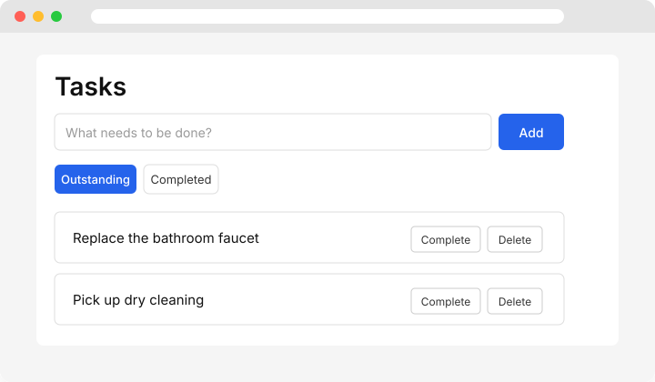

MCP-first personal task management.

Tasks is a small, fast, agent-friendly task manager. It gives you a clean web UI, a structured HTTP API, and an MCP server so AI assistants can manage your tasks alongside you — all sharing the same application core and SQLite database.
Create, complete, and delete tasks from a minimal React + Vite interface.
RESTful Fastify routes with validation and proper error status codes.
Expose tasks to any MCP client over stdio with validated tool inputs.
Built-in node:sqlite persistence — no native modules to compile.
# Clone the repo
git clone https://github.com/ericbaukhages/tasks.git
cd tasks
# Install dependencies
npm install
# Build and test
just build
just test
just lint
# Start the API and web UI
just serve
just dev-web Web UI (React + Vite)
│
▼
HTTP API (Fastify)
│
▼
Application Core (TaskService)
│ │
▼ ▼
Domain Persistence (SQLite via node:sqlite)
MCP Server (stdio)
│
▼
Application Core (same TaskService)
The HTTP and MCP interfaces never touch the database directly. Both delegate to a shared
TaskService so behavior stays consistent whether a human or an agent is
driving.
AI-assisted development is encouraged for this MCP-first project. Attribution is included in commit messages that contain AI-generated or -assisted content. See the AGENTS.md file.
MIT — see the LICENSE file.